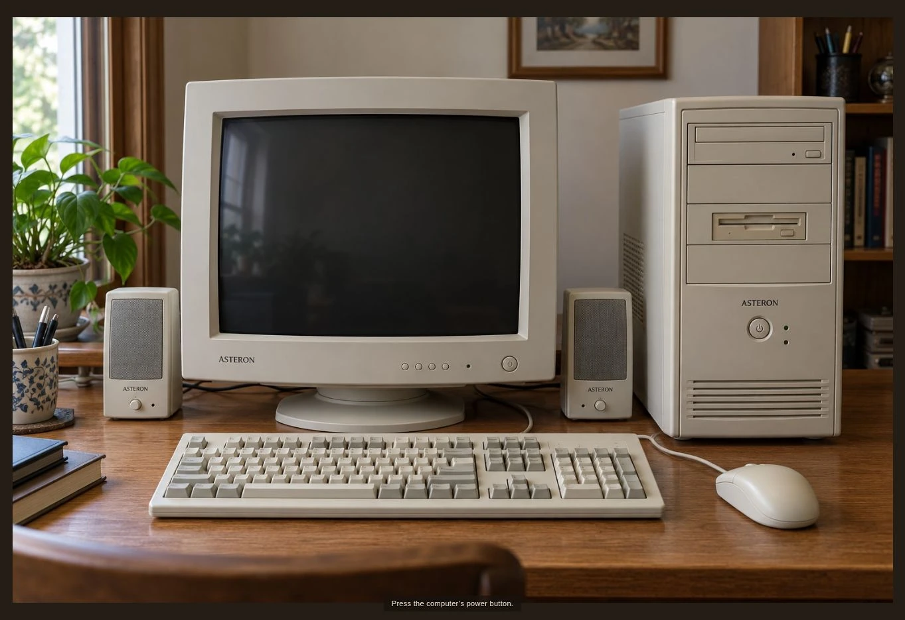
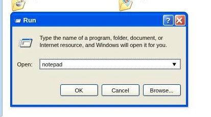
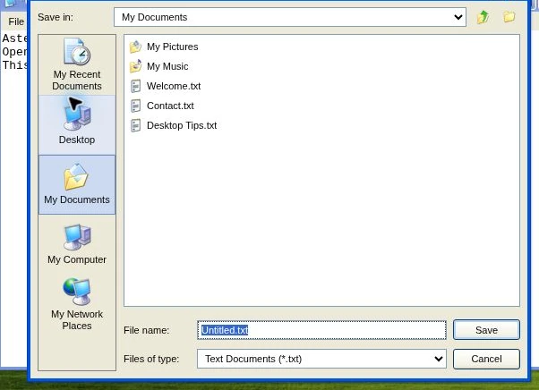
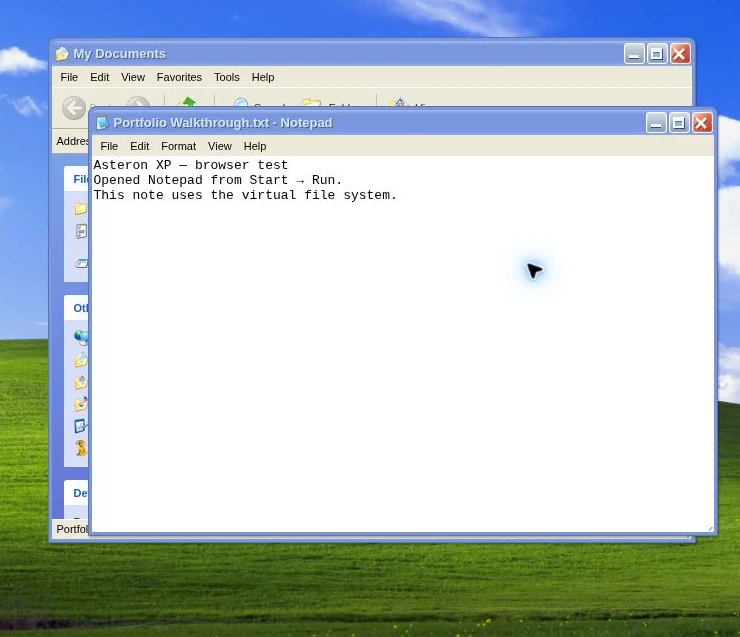
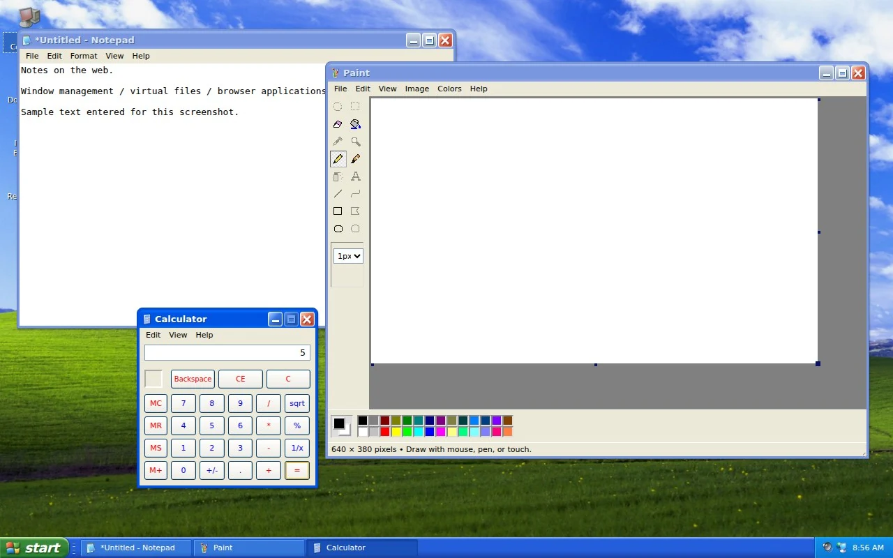
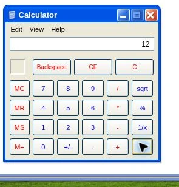

Personal project · Started in 2019
Asteron XP
I started Asteron XP in 2019 to bring the Windows XP desktop I remembered into a browser. I wanted visitors to be able to open an app, write a note, or draw in Paint.
- Started
- 2019
- My role
- Concept, design, and development
- Built with
- HTML, CSS, and JavaScript
 Enlarge image
Enlarge imageA desktop to explore
I began the project out of curiosity and for fun. The part I wanted to recreate was the way ordinary actions fit together. A note written in one window should be waiting in a folder when I open another.
One note, two applications
Notepad and My Documents share the virtual file system. This example follows a short note from the desktop’s power-on screen to the file being opened again.
Step 1 of 4
Enter the desktop
I designed the opening around a simulated computer. Pressing its power button starts the account-selection sequence and opens the desktop.


Enlarge imageStep 2 of 4
Open Notepad from Run
The Start menu and desktop shortcuts use the same application launcher. In Run, the command notepad opens a text window.


Enlarge imageStep 3 of 4
Save the note in My Documents
I connected Notepad’s Save As dialog to the same folders that Explorer displays. In this example the file is named Portfolio Walkthrough.txt.


Enlarge imageStep 4 of 4
Read the saved text
Opening the saved file from My Documents brings it back into Notepad with its filename and all three lines of text.


Enlarge imageOne shell for windows and files
I used a shared window manager to keep each app and its taskbar entry connected. Opening, minimising, restoring, and closing a window all update that same state.
My virtual file system gives apps a common set of folders and files. Notepad writes the text, Explorer lists the file, and browser storage keeps it available in the same browser profile.
- NotepadPasses the filename and text to the file system.
- Virtual folderStores the entry under My Documents.
- ExplorerLists the entry and passes the file back to Notepad.
Working with more than one app
I built the desktop so several apps can stay open together. Paint provides a drawing surface, Notepad handles text, and Calculator can stay on the taskbar while another window has focus.


Enlarge image

Enlarge imageMy legacy Asteron site is hosted externally. The walkthrough above is available here even when the legacy host is offline.
Contact
Connect with me on LinkedIn or find more of my work on GitHub.